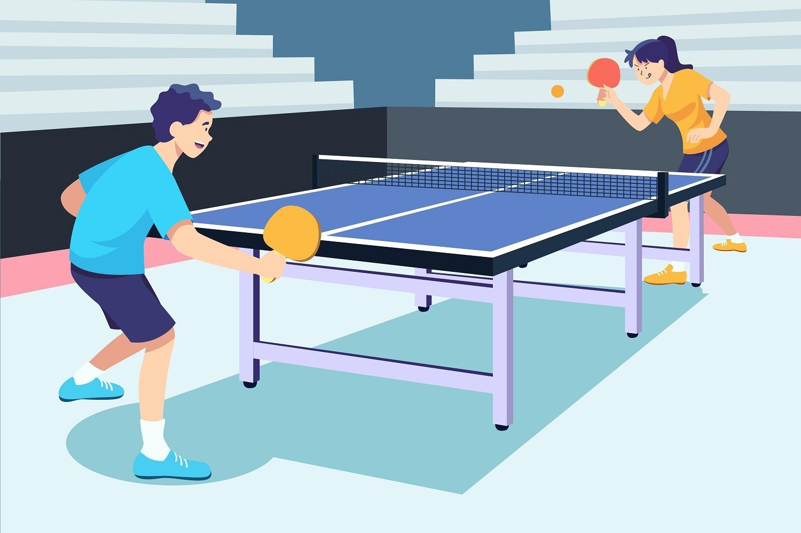
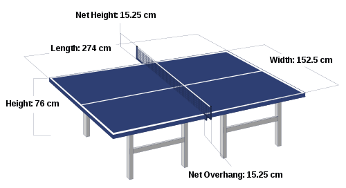

Tenis Meja
Tenis Meja atau Pingpong adalah olahraga yang melibatkan dua atau empat pemain yang memukul bola ringan yang disebut bola pingpong di atas meja menggunakan raket pejal kecil yang disebut bet. Permainan ini dilakukan di atas meja yang dibagi dengan net. Kecuali servis awal, aturan permainan adalah: pemain harus memantulkan bola ke meja lawan dan lawan harus mengembalikannya. Poin akan terjadi jika pemain lawan gagal mengembalikan bola. Permainan ini cepat dan membutuhkan sikap tanggap yang cepat pula. Memutar-mutar bola (teknik spin) akan mendistorsi arah bola sehingga lawan akan sulit mengembalikannya.
Organisasi olahraga tenis meja internasional adalah International Table Tennis Federation (ITTF), didirikan tahun 1926. ITTF beranggotakan 226 persatuan/federasi tenis meja di seluruh dunia pada saat ini. Aturannya dimuat dalam buku pegangan yang diterbitkan ITTF. Tenis meja disertakan dalam Olimpiade sejak 1988, dalam berbagai macam partai dan kategori. Sejak 1988 hingga 2004, ada partai tunggal putra-tunggal putri, serta ganda putra-ganda putri. Sejak 2008, sistem ajang tim telah dimainkan alih-alih ganda.
Sejarah
Tenis meja dibuat di Inggris sekitar abad ke-19, di mana dimainkan oleh orang kelas atas sebagai permainan indoor setelah makan malam. Tenis meja mempunyai beberapa nama, salah satunya "whiff whaff", dan disarankan bahwa permainannya pertama kali dikembangkan oleh tentara Inggris di India atau Afrika Selatan, di mana mereka membawanya kembali ke Inggris. Sebaris buku disusun ditengah meja sebagai net, di mana dua bukunya berfungsi untuk memukul bola golf. Nama "ping-pong" digunakan hampir semua negara sebelum perusahaan Inggris J. Jaques & Son Ltd menjadikannya merek dagang pada tahun 1901. Nama "ping-pong" kemudian lebih digunakan untuk permainan yang dimainkan peralatan Jaques, dengan perusahaan lain menyebutnya tenis meja. Situasi yang sama terjadi juga di Amerika Serikat, di mana Jaques menjual hak nama "ping-pong" kepada Parker Brothers. Parker Brothers lalu menjadikannya merek dagang tahun 1920-an, membuat organisasi lainnya mengubah nama menjadi "tenis meja" dibanding menggunakan nama yang lebih umum, namun dengan merek dagang.
Inovasi besar berikutnya dilakukan oleh James W.Gibb, pencinta tenis meja, yang menemukan bola seluloid dalam perjalanan menuju AS tahun 1901 dan menurutnya cocok untuk permainan. Ini diikuti E.C. Goode yang, pada tahun yang sama, menciptakan versi modern dari raket dengan memasang selembar karet yang diberi bintik, ke kayu yang sudah diasah. Tenis meja mulai terkenal pada tahun 1901 disebabkan turnamen yang dibuat, buku yang menuliskan tentang tenis meja, dan kejuaraan dunia tidak resmi pada tahun 1902. Pada awal 1900-an, permainan ini dilarang di Russia karena penguasa pada masa itu percaya bahwa memainkan tenis meja memiliki efek yang buruk pada penglihatan pemain.
Tahun 1921, Asosiasi Tenis Meja (TTA) dibuat di Inggris, dan diikuti Federasi Tenis Meja Internasional (ITTF) pada tahun 1926. London menjadi tuan rumah Kejuaraan Dunia resmi pertama tahun 1926.
Tahun 1933, Asosiasi Tenis Meja Amerika Serikat, sekarang disebut, Tenis Meja Amerika, dibentuk.
Tahun 1930, Edgar Snow berkomentar di Red Star Over China bahwa pihak Komunis di Perang Saudara China mempunyai "hasrat untuk Tenis Meja asal Inggris" yang menurutnya "ganjil".
Tahun 1950-an, raket yang menggunakan lembaran karet digabung dengan lapaisan spons di dasarnya mengubah permainan secara dramatis, meningkatkan kecepatan dan perputaran bola. Ini diperkenalkan perusahaan alat olahraga Inggris S.W. Hancock Ltd. Penggunaan lem cepat dapat meningkatkan kecepatan dan perputaran lebih jauh, yang menghasilkan perubahan peralatan untuk "menurunkan kecepatan permainannya". Tenis meja diperkenalkan sebagai cabang Olimpiade pada tahun 1988.
Teknik Dasar
Teknik Pegangan/Grip
Teknik pegangan/grip pada tenis meja dibagi menjadi 2 jenis, yaitu pegangan tangkai pena (Penholder Grip) dan pegangan jabat tangan (Shakehand Grip). Untuk penempatan jari tangan dari kedua teknik pegangan tersebut bisa menghasilkan banyak variasi-variasi pegangan, tergantung dari kebiasaan yang dilakukan atlit. Pegangan yang paling baik untuk seorang atlet yaitu pegangan yang senyaman mungkin dan sesuai dengan kebiasaan atlet yang bersangkutan.
- Pegangan Tangkai Pena (Penholder Grip)
- Pegangan Jabat Tangan
Pegangan tangkai pena yaitu pegangan yang digunakan atlet tipe penyerang. Pegangan tangkai pena ini disebut juga sebagai pegangan gaya Asia karena pegangan tangkai pena ini sering digunakan oleh pemain Asia. Postur pemain dengan tipe ini memiliki postur yang pendek sehingga gerakannya lincah.
Pegangan jabat tangan yaitu pegangan yang digunakan atlet tipe bertahan kombinasi menyerang. Kelebihan pegangan jabat tangan yaitu memiliki banyak variasi pukulan, forehand maupun backhand. Sedangkan kelemahan dari pegangan ini yaitu gerakan pergelangan tangan tidak sebebas pegangan tangkai pena.
Posisi Siap (Ready Position)
Posisi siap dalam tenis meja sangat penting terutama pada saat pengembalian bola lawan. Untuk dapat mengembalikan pukulan bola lawan, maka posisi seorang pemain harus dengan posisi siap agar pemain dapat menjangkau bola dan mengarahkannya dengan mudah. Dengan posisi yang baik ini, pemain lebih mudah melangkahkan kakinya dalam menyongsong bola.
Karakteristik Olahraga Tenis lapangan Ada tiga ciri untuk dapat memperoleh angka dalam bermain tenis meja, yaitu kecepatan (speed), putaran (spin), dan penempatan (placement). Untuk memperoleh proses pembibitan dan proses latihan yang terarah pada karakter yang diinginkan, maka pemain harus memahami ciri tersebut sehingga dapat meningkatkan prestasi tenis meja mereka.
Pukulan-pukulan (Stroke) Dasar Tenis Meja
Pukulan-pukulan dengan forehand maupun backhand dalam tenis meja, memiliki 2 komponen arah, yaitu komponen ke depan dan Komponen ke atas/bawah. Pukulan pada tenis meja sangan banyak yang pada dasarnya diawali dengan pukulan servis.
Jenis pukulan
Pukulan Forehand
Pukulan forehand yaitu pukulan yang dilakukan jika bola berada disebelah kanan tubuh. Dalam melakukan pukulan ini, posisi tubuh agak direndahkan kemudian gerakkan tangan kanan yang memegang bet ke arah pinggang dan kearah kiri apabila pemain kidal. Selanjutnya menggerakkan tangan ke depan dengan siku membentuk sudut 90 derajat.
Pukulan Backhand
Pukulan backhand yaitu pukulan yang dilakukan jika bola berada disebelah kiri badan. Dalam melakukan pukulan ini, posisi tubuh agak direndahkan kemudian gerakkan tangan kanan ke arah pinggang sebelah kiri dan kearah pinggang sebelah kanan apabila tidak kidal. Selanjutnya gerakkan tangan dan bet ke arah depan dengan siku membentuk sudut 90 derajat. Berikut beberapa Jenis pukulan forehand dan backhand antara lain:
- Drive
- Push
- Forehand Drive Setelah Backhand Push
- Servis
- Pukulan Block
Drive yaitu pukulan yang dilakukan dengan ayunan panjang yang menghasilkan pukulan datar dan keras. Pukulan drive ini merupakan teknik pukulan yang dimulai dengan sikap bet tertutup dan gerakan bet dari bawah serong ke atas yang kemudian diakhiri di depan dahi. Pada pukulan drive ini digunakan sebagai pukulan serangan yang juga dapat dikontrol sesuai dengan keinginan. Pada pukulan drive terdiri dari dua pukulan yaitu:
a. Forehand drive, yaitu pukulan yang dilakukan apabila bola
berada disebelah kanan tubuh.
b. Backhand Drive, yaitu pukulan yang dilakukan apabila bola
berada disebelah kiri tubuh.
Push merupakan teknik pukulan dengan cara mendorong bola yang mana posisi bet terbuka. Pada pukulan push ini, biasa digunakan untuk mengembalikan pukulan push dan pukulan chop. Pukulan push ini terdiri dari forehand push dan backhand push.
a. Berdasarkan datangnya bola forehand push dilakukan dengan dua
dua cara yaitu short forehand push dan long forehand push.
b. Berdasarkan datangnya bola backhand push dilakukan dengan dua
cara yaitu short backhand push dan long backhand push.
Dalam pertandingan tenis meja, pukulan forehand drive setelah backhand push adalah pukulan sering digunakan oleh seorang pemain. Pukulan ini biasa digunakan dalam mengembalikan bola yang dimulai dari pukulan push kemudian dilakukan dengan satu step kekiri sehingga dapat mengembalikan bola dengan pukulan forehand drive. Pukulan forehand drive setelah backhand push ini merupaka pukulan backhand push yang dikombinasikan dengan forehand.
Servis merupakan pukulan pertama dalam permainan tenis meja, dengan cara melambungkan bola keatas. Kemudian ketika bola mulai turun, maka pemain akan memukul bola dengan memantulkannya dimeja penyaji dan jatuh dimeja lawan.
Teknik pukulan block merupakan cara sederhana dalam mengembalikan pukulan lawan. Teknik pukulan ini biasa digunakan dalam mengembalikan bola top spin atau drive dengan posisi bet yang tertutup. Agar lawan tidak bisa melakukan serangan balik dengan cepat, maka digunakan teknik pukulan block yang dilakukan setelah bola sudah memantul dari meja setinggi net. Teknik pukulan ini juga sering disebut blok pendek karena teknik ini sering digunakna di depan meja. Teknik pukulan block dibagi menjadi 2 yaitu :
a. Forehand block merupakan teknik forehand block yang dilakukan
dengan gerakan bet di depan, dengan posisi bet yang menghadap
kebagian bawah. Untuk melakukan blok, pemain harus memperhatikan
arah datangnya bola.
b. Backhand block merupakan teknik backhand block yang dilakukan
dengan bet berada dibagain sebelah kiri tubuh pemain. Dalam
teknik ini posisi bet harus tertutup yaitu yang mana sisi bagian
depan menghadap ke bagian kebawah. Pada saat bola sudah memantul
dari meja, maka perhatikan arah datangnya bola dan kemudian
lakukan segera gerakan bet kedepan ketika bola dengan perkenaan
bet bagian tengan.
Peralatan Permainan
Bet
-
Ukuran, berat dan bentuk bet tidak ditentukan, tetapi daun bet harus datar dan kaku.
-
Daun bet minimal 85 % terbuat dari kayu diukur dari ketebalannya; lapisan perekat di dalam kayu dapat diperkuat dengan bahan yang berserat seperti serat karbon (carbon fibre) atau serat kaca (glass fibre) atau bahan kertas yang dipadatkan, namun bahan tersebut tidak boleh lebih dari 7,5 % dari total ketebalan atau berukuran 0,35 mm, yang lebih tipis yang dipakai sebagai acuan.
-
Sisi daun bet yang digunakan untuk memukul bola harus ditutupi oleh karet licin/halus maupun bintik, bila menggunakan karet bintik yang menonjol ke luar (tanpa spons) maka ketebalan karet termasuk lapisan lem perekat tidak boleh lebih dari 2.0 mm, atau jika menggunakan karet lapis (karet + spons) dengan bintik di dalamnya menghadap keluar atau ke dalam maka ketebalannya tidak boleh lebih dari 4.0 mm sudah termasuk dengan lem perekat.
-
Pada permulaan permainan dan kapan saja pemain menukar betnya selama permainan berlangsung, seorang pemain harus menunjukkan betnya pada lawannya dan pada wasit dan harus mengijinkan wasit dan lawannya untuk memeriksa/ mencobanya.
Bola
Bola tenis meja berdiameter 40 mm berat 2,7 gram. Biasanya berwarna putih atau oranye dan terbuat dari bahan selulosa yang ringan. Pantulan bola yang baik apabila dijatuhkan dari ketinggian 30,5 cm akan menghasilkan ketinggian pantulan pertama antara 23-26 cm. Pada bola tenis meja biasanya ada tanda bintang dari bintang 1 hingga bintang 3, dan tanda bintang 3 inilah yang menunjukan kualitas tertinggi dari bola tersebut dan biasanya digunakan dalam turnamen-turnamen resmi.
Meja Lapangan
Lapangan tenis meja permukaan atasnya memiliki ukuran tertentu dan tentunya harus bisa memantulkan bola pingpong. Ukuran lapangan tenis meja secara penuh adalah memiliki panjang 2,74 meter, lebar 1,525 meter, dan tinggi 76 sentimeter yang dihitung dari permukaan tanah.
Permukaan lapangan tenis meja dicat dengan menggunakan warna biru gelap atau warna hijau gelap sesuai dengan komposisi warna cat yang diatur dalam aturan Federasi Tenis Meja Internasional (ITTF). Permukaannya tidak boleh mengkilap.
Terdapat garis putih dengan lebar 2 cm pada kedua ujung meja. Garis panjang disebut dengan garis tepi panjang, garis pendek disebut garis akhir.
Ada garis putih selebar 3mm (1/8 inci) di tengah meja yang disebut dengan garis tengah. Ketika bermain pada permainan ganda, area dibagi menjadi bagian kiri dan kanan dan jaring ditempatkan di antara 2 bagian meja.
Cara Bermain
Permainan Tunggal
-
Setiap bola mati menghasilkan nilai satu.
-
Servis berganti pemain setiap mencapai poin kelipatan 2.
-
Pemegang servis bebas menempatkan bola dari segala penjuru lapangan.
-
Permainan satu set berakhir apabila pemain mencapai nilai 11, dan kemenangan diraih apabila mencapai 3 atau 4 kali kemenangan set.
-
Apabila terjadi deuce, permainan berakhir jika selisih nilai adalah 2. misal: 15-13, 18-16
Permainan Ganda
-
Setiap bola mati menghasilkan nilai satu.
-
Servis bergantian setiap poin kelipatan 2.
-
Pemain bergantian menerima bola dari lawan.
-
Pemegang servis hanya bisa menempatkan bola ke ruang kamar sebelah kanan lawan.
-
Permainan satu set berakhir apabila pemain mencapai nilai 11, dan kemenangan diraih apabila mencapai 3 atau 4 kali kemenangan set.
-
Apabila terjadi deuce, permainan berakhir jika selisih nilai adalah 2. misal: 13-11, 15-17.